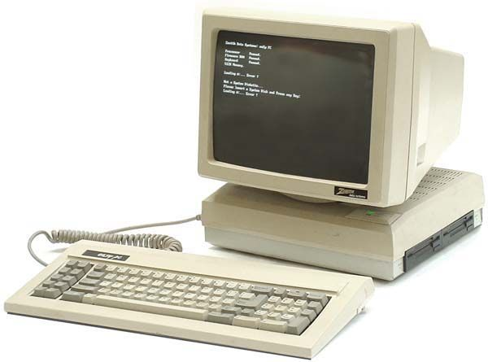

Комьютерийн үүсэл хөгжил.
Орчин үеийн компьютерууийн хамгийн анхны загварыг 1941 онд анх гаргаж байжээ. Тус компьютер нь 4.5 тонн жинтэй бүхэл бүтэн 2 өрөөг дүүргэхээр том хэмжээтэй хэрнээ зөвхөн тоо бодох зориулалтаар зохион бүтээгдсэн байна. Шинжлэх ухаан хөгжхийн хэрээр овор хэмжээ бага хэмжээтэй болсоор 1981 онд IBM PC ( IBM 5150) буюу бидний өнөөгийн хэрэглэж буй анхны персонал компьютерын загварыг гаргасан байна. Тухайн үед Аpple болон IBM хүчтэй өрсөлдөж байсан бөгөөд 1983 он гэхэд Apple-ийн бүтээгдэхүүн болох “Apple II” 420000 зарагдахад IBM ийн PC 1,3 сая борлогдсон байжээ. 1985 он гэхэд дэлхийн компьютер борлуулалтын хагасыг IBM эзэмших төлөвтөй байв. Гэвч Apple ийн 1984 онд гаргасан Macintosh нь 9 инчийн дэлгэц 128К санах ойтой бүтээгдсэн бөгөөд 2,495$ ын үнээр худалдаалагдаж байсан нь Apple-д маш том амжилтыг авчиржээ. Цаашлаад Macintosh 512К үйлдвэрлэгдэж, дараачын Macintosh plus 1mb санах ойтой болж нэмэлт хард диск залгах болсноороо илүү боловсронгүй болжээ. Steve Jobs 1997 онд Apple-д эргэн ирсэн даруйдаа ажилдаа хамцуй шамлан орж 1998 оны 8-р сард тухайн үедээ хамгийн өвөрмөц шийдэлтэй iMac ийг 1200 орчим доллар аар худалдаанд гаргасан нь эхний зургаан долоо хоногт 278000, он дуусахад 800000 ширхэг зарагдсанаар Apple-н түүхэн дэх хамгийн хурдан борлогдсон компьютер болжээ. Хамгийн тэмдэглүүштэй нь худалдан авагч нарын 32 хувь нь анх удаагаа компьютер авч байгаа хүмүүс, 12 хувь нь Windows-ын хэрэглэгчид байлаа.